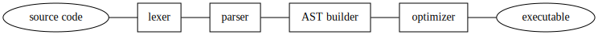

Analisi lessicale
Maurizio Tomasi maurizio.tomasi@unimi.it
Finora abbiamo creato immagini fotorealistiche modificando il comando demo del nostro raytracer.
Dovreste aver ormai riscontrato tutti una certa farraginosità nella procedura! Tutte le volte che abbiamo voluto modificare l’immagine, occorreva compiere queste azioni:
main;Questo approccio potrebbe non essere sostenibile: di fatto obblighiamo gli utenti a scrivere codice nel linguaggio di programmazione che abbiamo usato!
Perché il nostro programma sia davvero versatile (e possa meritare il rilascio di una versione 1.0.0), deve smettere di produrre solo immagini dimostrative (il comando demo).
Dovrebbe invece prendere in input una descrizione di una scena e produrre in output l’immagine corrispondente.
Ma come fa l’utente a fornire in input una descrizione della scena?
Nel caso in cui il linguaggio usato sia Julia o Python, che ammette un uso interattivo, non è affatto strano chiedere che l’utente definisca le scene direttamente dalla REPL (o da un notebook Jupyter/Pluto)!
Ma nel caso di programmi scritti in C++, C# o Kotlin, una soluzione del genere non è percorribile: non è affatto detto che l’utente abbia installato gli strumenti di sviluppo e le librerie necessarie per modificare e ricompilare il programma.
Quello che faremo oggi è implementare un nostro mini-linguaggio per la definizione delle scene. Non è la soluzione migliore per chi usa Julia, ma chiedo comunque a tutti di implementare quanto richiesto, perché il valore dell’esercizio è soprattutto didattico.
Per implementare questa feature dovremo apprendere i rudimenti della teoria dei compilatori, che non viene affrontata in altri corsi (che io sappia).
Dovremo scrivere codice che gestisca le (tante) possibili condizioni di errore in modo robusto ed elegante, più di quanto abbiamo fatto sinora (un path-tracer non è il genere di programma indicato per questo!): ciò è molto educativo!
Capirete meglio il funzionamento (e i messaggi di errore!) dei compilatori, e anche certe caratteristiche dei linguaggi di programmazione che avete usato.
È intellettualmente stimolante… e può essere anche molto divertente!
SQL (Structured Query Language) è un linguaggio usato per creare/modificare/consultare tabelle di dati salvate in database:
La libreria sqlite3 implementa un interprete SQL e un formato di dati, consentendo di salvare/leggere questi database da file. È una delle librerie più usate al mondo, ed è usata in Linux, Mac OS X, Android e iOS.
È una libreria invocabile da C/C++, Python, C#, etc., ma il comando consente di operare direttamente dalla linea di comando!
Immaginate come implementare questi comandi in linguaggi come C++ o Python. Ovviamente SQL è molto più immediato!
Alcuni linguaggi general-purpose sono metaprogrammabili, ossia hanno la capacità di estendere la propria sintassi.
Questa capacità consente di definire delle DSL all’interno del linguaggio stesso (es., Common LISP, Julia, Kotlin, Nim…).
Vediamo un paio di esempi.
using ACME
circ = @circuit begin
j_in = voltagesource()
r1 = resistor(1e3)
c1 = capacitor(47e-9)
d1 = diode(is=1e-15)
d2 = diode(is=1.8e-15)
j_out = voltageprobe()
j_in[+] ⟷ r1[1]
j_in[-] ⟷ gnd
r1[2] ⟷ c1[1] ⟷ d1[+] ⟷ d2[-] ⟷ j_out[+]
gnd ⟷ c1[2] ⟷ d1[-] ⟷ d2[+] ⟷ j_out[-]
endLa libreria ACME definisce una serie di operatori come ⟷ e [±] che consentono di descrivere un circuito elettrico con una sintassi immediatamente comprensibile.
import karax / [karaxdsl, vdom]
const places = @["boston", "cleveland", "los angeles", "new orleans"]
proc render*(): string =
let vnode = buildHtml(tdiv(class = "mt-3")):
h1: text "My Web Page"
p: text "Hello world"
ul:
for place in places:
li: text place
dl:
dt: text "Can I use Karax for client side single page apps?"
dd: text "Yes"
dt: text "Can I use Karax for server side HTML rendering?"
dd: text "Yes"
result = $vnode
echo render()La libreria karax/karaxdsl estende il linguaggio Nim con comandi come h1 e p, in modo che si possano definire gli elementi che definiscono una pagina HTML.
{ DKBTrace example file }
INCLUDE "colors.dat"
INCLUDE "shapes.dat"
INCLUDE "textures.dat"
VIEW_POINT
LOCATION <0 0 0>
DIRECTION <0 0 1>
UP <0 1 0>
RIGHT <1.33333 0 0>
END_VIEW_POINT
OBJECT
SPHERE
<0 0 3> 1
END_SPHERE
TEXTURE
COLOUR Red
END_TEXTURE
END_OBJECT
OBJECT
SPHERE
<0 0 0> 1
END_SPHERE
TEXTURE
COLOUR White
END_TEXTURE
TRANSLATE <2 4 -3>
LIGHT_SOURCE
COLOUR White
END_OBJECTPOV-Ray risolve l’equazione del rendering usando il point-light tracing (ma che nel manuale di POV-Ray viene chiamato semplicemente raytracing), esattamente come DKBTrace.
La prima versione è stata rilasciata nel 1991; al momento la versione più recente è la 3.7.0 (rilasciata nel 2013). La versione 3.8 è in fase di preparazione.
In origine era stato scritto in C, e poi riscritto in C++.
A partire dalla versione 3.0 implementa l’algoritmo radiosity per simulare sorgenti diffuse in maniera simile al path-tracing.
// PolyRay example file
viewpoint {
from <0,0,-8> // The location of the eye
at <0,0,0> // The point that we are looking at
up <0,1,0> // The direction that will be up
angle 45 // The vertical field of view
resolution 160, 160 // The image will be 160x160 pixels
}
background skyblue
light <-10,3, -20>
define shiny_red
texture {
surface {
color red
ambient 0.2
diffuse 0.6
specular white, 0.5
microfacet Cook 5
}
}
object {
sphere <0, 0, 0>, 2
shiny_red
}Scritto in C++ (repository su GitHub).
Risolve l’equazione del rendering usando un algoritmo di path-tracing.
Può essere usato in Blender come «motore» per il rendering.
Il formato delle scene è XML.
<scene>
<shader type="generic" name="Default">
<attributes>
<color r="0.750000" g="0.750000" b="0.800000" />
<specular r="0.000000" g="0.000000" b="0.000000" />
<reflected r="0.000000" g="0.000000" b="0.000000" />
<transmitted r="0.000000" g="0.000000" b="0.000000" />
</attributes>
</shader>
<transform
m00="8.532125" m01="0.000000" m02="0.000000" m03="0.000000"
m10="0.000000" m11="8.532125" m12="0.000000" m13="0.000000"
m20="0.000000" m21="0.000000" m22="8.532125" m23="0.000000"
m30="0.000000" m31="0.000000" m32="0.000000" m33="1.000000"
>
<object name="Plane" shader_name="Default" >
<attributes>
</attributes>
<mesh>
<include file=".\Meshes\Plane.xml" />
</mesh>
</object>
</transform>
<light type="pathlight" name="path" power= "1.000000" depth="2" samples="16"
use_QMC="on" cache="on" cache_size="0.008000"
angle_threshold="0.200000" shadow_threshold="0.200000" >
</light>
<camera name="Camera" resx="1024" resy="576" focal="1.015937" >
<from x="0.323759" y="-7.701275" z="2.818493" />
<to x="0.318982" y="-6.717273" z="2.640400" />
<up x="0.323330" y="-7.523182" z="3.802506" />
</camera>
<filter type="dof" name="dof" focus="7.97854234329" near_blur="10.000000"
far_blur="10.000000" scale="2.000000">
</filter>
<filter type="antinoise" name="Anti Noise" radius="1.000000"
max_delta="0.100000">
</filter>
<background type="HDRI" name="envhdri" exposure_adjust="1">
<filename value="Filename.HDR" />
</background>
<render camera_name="Camera" AA_passes="2" AA_minsamples="2"
AA_pixelwidth="1.500000" AA_threshold="0.040000"
raydepth="5" bias="0.300000" indirect_samples="1"
gamma="1.000000" exposure="0.000000" background_name="envhdri">
<outfile value="butterfly2.tga"/>
<save_alpha value="on"/>
</render>
</scene>Il nostro obbiettivo è di definire un formato per la descrizione delle scene, e di scrivere del codice per interpretarlo.
Una volta implementato, l’utente userà un comune editor come Emacs o Visual Studio Code per creare un file, chiamato ad es. scene.txt, ed eseguirà il programma così:
./myprogram render scene.txte gli oggetti Shape e Material saranno creati in memoria basandosi su quanto specificato in scene.txt. Il rendering poi procederà esattamente come il comando demo, con la differenza che ora l’utente potrà modificare facilmente scene.txt.
Ci aspetta ora un compito molto eccitante: definire come strutturare il nostro formato!
Potremmo accontentarci di un formato molto semplice, come il Wavefront OBJ che avevamo descritto tempo fa.
Ad esempio, potremmo definire una BRDF diffusiva (d) con colore (0.3, 0.7, 0.5) associata a una sfera (s) centrata in (1, 3, 6) di raggio r = 2 così:
d 0.3 0.7 0.5
s 1 3 6 2Ma non sarebbe affatto leggibile! Proviamo a pensare a qualcosa di più strutturato.
Ovviamente il formato non deve essere ambiguo, e deve essere facile da ricordare.
Anziché usare lettere come s o d per indicare diverse entità (sfera o BRDF diffusiva), useremo stringhe di caratteri (sphere e diffuse)
La scrittura s 1 3 6 2 non è chiara, perché non si distingue il raggio dalle coordinate. Ispirandoci alla sintassi POV-Ray, indicheremo punti e vettori con le parentesi angolari, ad es. <1, 3, 6>.
Implementeremo anche la possibilità di associare un nome agli oggetti: in questo modo potremo fare riferimento a BRDF create in precedenza (es., green_matte) quando definiamo nuove Shape.
Pensiamo a cosa deve essere specificabile nel nostro formato. Dobbiamo sicuramente prevedere una sintassi per ciascuno di questi oggetti:
Dobbiamo definire una sintassi per creare oggetti, e ovviamente ci sono varie possibilità. Ad esempio, per definire una sfera potremmo usare una qualsiasi di queste forme:
sphere: <1, 3, 6>, 2
sphere(<1, 3, 6>, 2)
sphere with center=<1, 3, 6>, radius=2
<1, 3, 6> 2 sphere(L’ultima sintassi è comune in linguaggi stack-based come il Postscript).
La scelta dell’una o dell’altra sintassi è in linea di principio completamente nelle nostre mani!
Senza ulteriori indugi, vi mostro la sintassi che ho scelto per il corso tramite un esempio concreto.
# Declare a floating-point variable named "clock"
float clock(150)
# Declare a few new materials. Each of them includes a BRDF and a pigment
# We can split a definition over multiple lines and indent them as we like
material sky_material(
diffuse(image("sky-dome.pfm")),
uniform(<0.7, 0.5, 1>)
)
material ground_material(
diffuse(checkered(<0.3, 0.5, 0.1>,
<0.1, 0.2, 0.5>, 4)),
uniform(<0, 0, 0>)
)
material sphere_material(
specular(uniform(<0.5, 0.5, 0.5>)),
uniform(<0, 0, 0>)
)
# Define a few shapes. Note that we can compose transformations through
# the "*" operator
# Here we use the "clock" variable! Note that vectors are notated using
# square brackets ([]) instead of angular brackets (<>) like colors
plane(sky_material, translation([0, 0, 100]) * rotation_y(clock))
# The language is flexible enough to permit spaces before "("
plane (ground_material, identity)
sphere(sphere_material, translation([0, 0, 1]))
# Define a camera
camera(perspective, rotation_z(30) * translation([-4, 0, 1]), 1.0, 1.0)Da un punto di vista puramente concettuale, il compito che ci aspetta non è poi così diverso da quello di leggere un file PFM…
…con la differenza però che il file di input che consideriamo ora è molto più complesso e «duttile» del formato PFM!
Questa maggiore versatilità comporta molti più rischi di errore: è facile dimenticarsi una virgola, o confondere un < con un [. Dobbiamo quindi prestare grande cura alla segnalazione degli errori!
Per interpretare questo tipo di file occorre procedere per gradi.
Il lavoro che ci aspetta è simile alla scrittura di un compilatore vero e proprio. Ad esempio, il comando g++ legge in input file di testo fatti come il seguente:
#include <iostream>
int main(int argc, const char *argv[]) {
std::cout << "The name of the program is " << argv[0] << "\n";
}e produce in output un file eseguibile che contiene la sequenza di istruzioni macchina corrispondenti a questo codice C++.
Nel nostro caso il codice deve costruire in memoria una serie di variabili che contengono le Shape, la Camera e i Material di cui è composta la scena.
Per chi lavora con interpreti/compilatori è prassi usare alcuni termini della linguistica:
Nel caso di un «linguaggio» informatico come il nostro, la sua analisi viene solitamente fatta seguendo lo stesso ordine della slide precedente:
Sphere, Plane, SpecularBRDF, etc.), come se fossero state dichiarate ed inizializzate direttamente nel nostro codice sorgente.
Consideriamo le prime righe dell’esempio mostrato poco fa:
# Declare a variable named "clock"
float clock(150)Il risultato dell’analisi lessicale delle linee sopra è la produzione della sequenza
TOKEN_KEYWORD "float"
TOKEN_IDENTIFIER "clock"
TOKEN_SYMBOL "("
TOKEN_NUMBER 150.0
TOKEN_SYMBOL ")"Se l’utente avesse usato una @ anziché dello zero nel numero 150 (scrivendo 15@), l’errore sarebbe stato segnalato in questa fase (errore lessicale).
Il commento nella prima riga non compare nella lista dei token: commenti e spazi bianchi sono di solito rimossi già durante l’analisi lessicale.
# Declare a variable named "clock"
float clock(150)L’analisi sintattica parte dalla sequenza di token prodotta dall’analisi lessicale:
TOKEN_KEYWORD "float"
TOKEN_IDENTIFIER "clock"
TOKEN_SYMBOL "("
TOKEN_NUMBER 150.0
TOKEN_SYMBOL ")"L’analisi sintattica deve verificare che la sequenza di token sia corretta: se il primo token è la parola chiave (keyword) float, allora significa che stiamo definendo una variabile floating-point. È quindi necessario che il token successivo contenga il nome della variabile (deve essere un identificatore), seguito dal valore numerico racchiuso tra le parentesi.
Prendendo spunto da questo esempio, considerate il seguente codice C++:
Questo codice è sbagliato, perché la sintassi del C++ richiede che il tipo della variabile (int) sia seguito da un identificatore, e non da una keyword (if).
Notate però che il codice sopra è comprensibile da un essere umano! (In LISP il codice sarebbe ok).
# Declare a variable named "clock"
float clock(150)Il risultato dell’analisi sintattica dice che l’istruzione richiede di creare una variabile clock e di assegnarle il valore 150.0.
L’analisi semantica deve verificare che la definizione di questa variabile non crei inconsistenze. Ad esempio, potrebbe verificare che clock non fosse già stata definita in precedenza, e nel caso scegliere una di queste possibilità:
clock anziché definirne una nuova con lo stesso nome (è il caso del Python e di Scheme).Il lexer è la parte di codice che si occupa dell’analisi lessicale.
Il suo compito è di leggere da uno stream (tipicamente un file) e produrre in output una lista di token, classificati secondo il loro tipo.
Per motivi di efficienza, i lexer non restituiscono una lista di token, ma leggono i token uno alla volta, restituendoli man mano che li interpretano, e si usano quindi così:
Un lexer deve restituire un token della tipologia «giusta».
A seconda del linguaggio esistono vari tipi di token; nel nostro caso abbiamo:
sphere e diffuse;clock;150, possibilmente distinto tra integer literal e floating-point literal;" (doppi apici) o ' (singoli apici);(, +, ,, etc.) Non considereremo simboli composti da più caratteri (es., >= in C++).L’implementazione del tipo Token ci consente di approfondire il sistema dei tipi dei linguaggi che abbiamo usato nel corso.
Concettualmente, i diversi tipi di token sono derivati da un tipo base, Token appunto. È quindi naturale pensare a una gerarchia di classi, che ha Token come tipo base.
Questa soluzione funziona, ed è ciò che ho usato in pytracer. Non è però la soluzione più comoda!
@dataclass
class Token:
"""A lexical token, used when parsing a scene file"""
file_name: str = ""
line_num: int = 0
col_num: int = 0
class LiteralNumberToken(Token):
"""A token containing a literal number"""
def __init__(self, file_name: str, line_num: int, col_num: int, value: float):
super().__init__(file_name=file_name, line_num=line_num, col_num=col_num)
self.value = value
def __str__(self) -> str:
return str(self.value)
class SymbolToken(Token):
"""A token containing a symbol (i.e., a variable name)"""
def __init__(self, file_name: str, line_num: int, col_num: int, symbol: str):
super().__init__(file_name=file_name, line_num=line_num, col_num=col_num)
self.symbol = symbol
def __str__(self) -> str:
return self.symbol
# Etc.Ci sono alcuni svantaggi nell’usare una gerarchia di classi:
Token. Ma nel caso di un linguaggio, l’elenco dei tipi di token è fissato ed è molto difficile che cambi.Il tipo più indicato per un token è un sum type, chiamato anche tagged union, che si contrappone ai product type che tutti voi conoscete (probabilmente senza saperlo). Vediamo in cosa consistono.
Le struct/class di linguaggi come C++, Python e Julia sono product types, perché dal punto di vista formale sono un prodotto cartesiano tra insiemi.
Consideriamo questa definizione in C++:
Se l’insieme di tutti i valori assumibili da un int e da un char è denominato rispettivamente con I e C, allora una variabile MyStruct var è tale per cui \mathtt{var} \in I \times C.
Un sum type combina tra loro più tipi usando la somma insiemistica (ossia l’unione \cup) anziché il prodotto cartesiano.
Nel nostro esempio C++, i sum types si definiscono tramite la parola chiave union (molto appropriata!):
In questo caso, la variabile MyStruct var è tale per cui \mathtt{var} \in I \cup C: puo essere un int oppure un char, ma non entrambi contemporaneamente.
Un token è idealmente rappresentato da un sum type. Supponiamo di avere per semplicità due soli tipi di token, definiti in un codice C++:
150), rappresentato in memoria come un float;"filename.pfm"), rappresentato da std::string;Se i numeri appartengono all’insieme N e le stringhe a S, allora è chiaro che il token t è tale per cui \mathtt{t} \in N \cup S: può essere uno dei due tipi, ma non più tipi contemporaneamente.
Potremmo allora definire il tipo Token in C++ nel modo seguente:
Una volta assegnato un valore però non c’è modo di capire a quale dei due insiemi N o S appartenga l’elemento (le union non sono tagged):
La soluzione è di includere le union in struct, usando tre tipi:
Token è una struct che contiene al suo interno il cosiddetto tag (che indica se il token appartiene a N o a S);TokenType è il tag, ed è di solito un enum class;TokenValue è la union vera e propria, che va corredata di un costruttore e un distruttore di default per poter essere usata in Token.Una volta definiti questi tipi, è possibile scrivere
// Kinds of tokens. Here we just consider two types
enum class TokenType {
LITERAL_NUMBER,
LITERAL_STRING,
};
// The sum type.
union TokenValue {
float number;
std::string string;
// The default constructor and destructor are *mandatory* for unions to
// be used in structs/classes
TokenValue() : number(0.0) {}
~TokenValue() {}
};
// Here is the "Token" type! We just combine `TokenType` and `TokenValue`
// in a product type, which implements a proper "tagged union".
struct Token {
TokenType type; // The "tag"
TokenValue value; // The "union"
Token() : type(TokenType::LITERAL_NUMBER) {}
};unionIl codice non è molto pulito; anzi, è piuttosto farraginoso!
Non mette al riparo da una serie di problemi:
Sono sempre possibili inconsistenze:
Il compilatore non può verificare che degli switch sul tag siano esaustivi.
// Let's assume we have several token types
enum class TokenType {
LITERAL_NUMBER,
LITERAL_STRING,
SYMBOL,
KEYWORD,
};
void print_token(const Token & t) {
switch(t.type) {
case TokenType::LITERAL_NUMBER: std::cout << t.value.number; break;
case TokenType::LITERAL_STRING: std::cout << t.value.string; break;
case TokenType::LITERAL_SYMBOL: std::cout << t.value.symbol; break;
// Oops! I forgot TokenType::KEYWORD!
}
}Linguaggi come Haskell, i derivati di ML (es., OCAML, F#), Rust e Swift consentono di definire sum types in maniera molto più naturale.
Ad esempio, ecco come definire il tipo Token in OCAML:
type token =
| LiteralNumber of float
| LiteralString of string
| Symbol of char
| Keyword of string;Non c’è bisogno di definire una lunga gerarchia di classi!
In linguaggi come OCAML i controlli sui sum types sono esaustivi:
I sum types rappresentano gerarchie di classi «rigide», dove c’è un solo antenato (token) e le classi figlie sono note a priori: proprio il caso dei token! Linguaggi come OCAML sono infatti spesso usati per scrivere compilatori (es., FFTW, Rust).
Per risparmiare memoria, solitamente un lexer legge un carattere alla volta, e a seconda del carattere letto, «decide» che tipo di token creare.
Ad esempio, la lettura del carattere " (doppio apice) in un codice C++ indica che si sta definendo una stringa di caratteri:
In questo caso il lexer continua a leggere finché trova un nuovo carattere ", che segnala la fine della stringa, e restituisce un token string literal.
Il caso di uno string literal è semplice da affrontare: tutte le volte che ci si imbatte in un carattere ", si ha a che fare con questo tipo di token.
Ma nella maggior parte dei casi un lexer deve affrontare ambiguità. Ad esempio, un carattere a…z indica che sta iniziando una keyword come for, oppure un identifier come number_of_steps?
In questo caso si leggono caratteri finché appartengono alla lista dei caratteri validi in un identificatore (solitamente lettere maiuscole/minuscole, cifre e il carattere _), poi si confronta la stringa letta con la lista di possibili keyword ammesse dal linguaggio.
In un lexer (e vedremo che è così anche nei parser) è comoda la possibilità di far sì che un carattere appena letto dal file sia «dis-letto», ossia venga rimesso a posto:
c = read_char(file) # Suppose that this returns the character "X"
unread_char(file, c) # Puts the "X" back into the file
c = read_char(file) # Read the "X" againQuesto permette di scrivere il lexer in maniera più elegante.
L’operazione unread_char non fa nulla sul file (che è aperto in sola lettura!): semplicemente memorizza il carattere X in una variabile all’interno di file, e la restituisce alla successiva chiamata a read_char.
unread_charPerché unread_char è utile in un lexer? Vediamo per esempio questa espressione Python:
che è composta dei token 15 (numeric literal), + (symbol), 4 (numeric literal).
Quando il lexer inizia il suo lavoro individua il carattere 1, e capisce che deve creare un token numeric literal. A questo punto deve leggere i caratteri finché trova la prima non-cifra, che è +. Ma una volta letto +, deve rimetterla a posto perché fa parte del token successivo.
ch = read_char()
# Very basic and ugly code! It does not interpret negative numbers!
if ch.isdigit():
# We have a numeric literal here!
literal = ch
while True:
ch = read_char() # Read the next character
if ch.isdigit():
# We have got the next digit for the current numeric literal
literal += ch
else:
# The number has ended, so put the last character back in place
self.unread_char(ch)
break
try:
value = int(literal)
except ValueError:
print(f"invalid numeric literal {literal}")Già nella scrittura del lexer, prima di occuparsi dell’aspetto sintattico e semantico, è possibile imbattersi in errori nel codice.
Ad esempio, la presenza di un carattere come @ non è ammessa nel nostro linguaggio, e già il lexer può individuare questo tipo di errore.
Un altro esempio è la dimenticanza di chiudere il doppio apice " alla fine di una stringa.
Nei compilatori moderni, il tipo Token contiene al suo interno anche informazioni sulla posizione del token nel file sorgente (vedi ad esempio il tipo Token nella versione 10.0.0 del compilatore Clang: non è un’implementazione molto elegante, ma è ottimizzata per essere efficiente!).
Questa informazione serve al lexer e al parser per stampare messaggi d’errore come il seguente (prodotto da Clang 10):
test.cpp:31:15: error: no viable conversion from 'int' to 'std::string'
(aka 'basic_string<char>')
std::string message = 127;
^ ~~~dove viene indicato il nome del file (test.cpp), il numero della riga (31) e il numero della colonna (15) in cui è stato trovato l’errore.
La posizione di un token in un file è identificata da tre informazioni:
Il tipo Token dovrebbe quindi contenere anche questi tre campi. Se usate una gerarchia di classi (come in pytracer) potete implementarle direttamente nel tipo, oppure definite un tipo SourceLocation (come fa Clang).